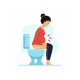

Constipation in Pregnancy
Or Syrup Lactulose N=1 15cc q12h
1️⃣ بیماری های داخلی
✔️روماتولوژیک : لوپوس ، اسکلرودرمی
✔️غدد :دیابت ، هایپوتیروئدیسم ، هایپرپاراتیروئیدیسم
✔️اورمی
✔️IBS و IBD
✔️مسمومیت با سرب
2️⃣ بیماری های جراحی
✔️ایلئوس
✔️ انسداد روده
✔️ ولولوس
✔️دیورتیکولیت
3️⃣ بیماری های سایکولوژیک
✔️ اختلال اضطرابی
✔️ افسردگی
4️⃣ بیماری های نورولوژیک
✔️ نوروپاتی
✔️ پارکینسون
✔️ MS
✔️آسیب طناب نخاعی
تصویری برای این نسخه موجود نیست.